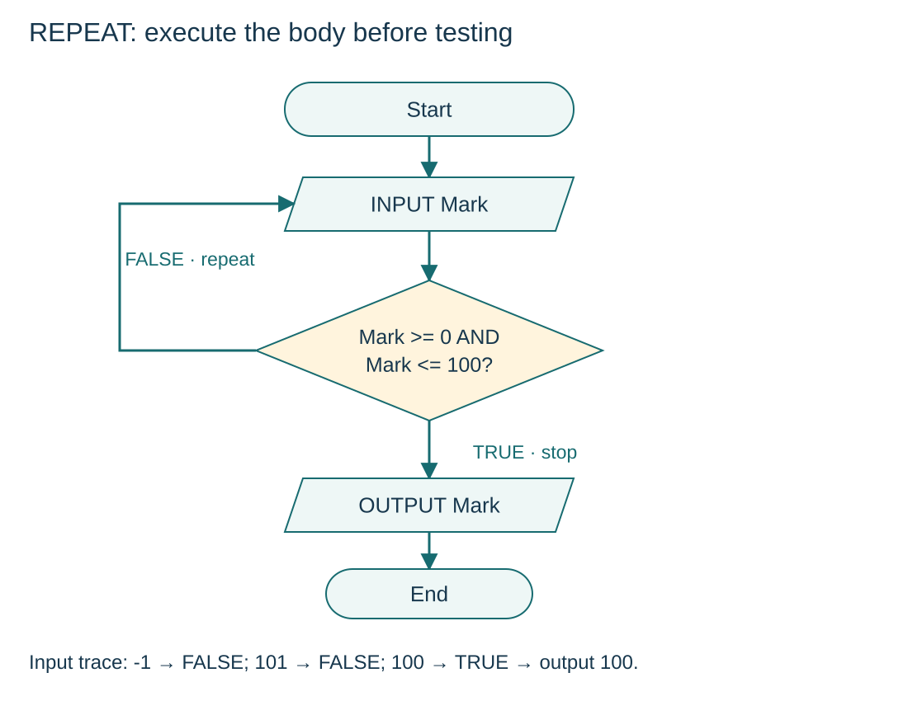

Use a post-condition REPEAT loop
Visual overview
REPEAT: execute the body before testing

Visual transcript
- INPUT Mark runs before the first UNTIL test, so at least one input is read.
- The condition is (Mark >= 0) AND (Mark <= 100). TRUE exits; FALSE returns to INPUT Mark.
- For inputs -1, 101, 100, the outcomes are FALSE, FALSE, TRUE. The final output is 100.
A post-condition loop executes its body before testing, so the body runs at least once.
Read the REPEAT rules
- Syntax: Write REPEAT, the body, then UNTIL Condition. There is no ENDREPEAT.
- TRUE: Stop and continue after the loop.
- FALSE: Return to the body for another iteration.
Apply the rule to validation
Read Mark inside the body and accept it when (Mark >= 0) AND (Mark <= 100). An invalid integer triggers another input. This example assumes integer input: the range test does not itself handle text instead of a number.
Follow integer attempts −1, 101, 100
| Attempt read | Lower bound met? | Upper bound met? | UNTIL result / next action |
|---|---|---|---|
| -1 | FALSE | TRUE | FALSE: read again. |
| 101 | TRUE | FALSE | FALSE: read again. |
| 100 | TRUE | TRUE | TRUE: leave the loop and output 100. |
State what makes the loop finish
The condition uses the value just obtained in the body. If the first input is 0, both comparisons are true on the first test and only one read occurs. If no valid integer is ever supplied, the program continues requesting input; a stopping guarantee would need an additional attempt limit.
Keep validation within its stated purpose
A range check establishes whether an integer is allowed; it does not establish whether the original real-world mark was entered accurately. Nor does this integer-input example handle text typed in place of a number.
Worked example · Read a mark in the inclusive range
- Pseudocode
DECLARE Mark : INTEGER REPEAT INPUT Mark UNTIL (Mark >= 0) AND (Mark <= 100) OUTPUT Mark - Trace and check
Inputs -1, 101, 100 lead to three reads and output 100. Input 0 is accepted on the first attempt.
Core explanation · Exam essentials
- REPEAT executes before testing; UNTIL TRUE ends repetition.
- Obtain a fresh attempt inside the loop and make the stopping condition express acceptance.